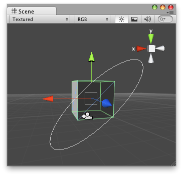

Handles.Disc
public static Quaternion Disc(int id,
Quaternion rotation,
Vector3 position,
Vector3 axis,
float size,
bool cutoffPlane,
float snap);
public static Quaternion Disc(Quaternion rotation,
Vector3 position,
Vector3 axis,
float size,
bool cutoffPlane,
float snap);
Parameters
| id | Control id of the handle. | |
| rotation | The rotation of the disc. | |
| position | The center of the disc. | |
| axis | The axis to rotate around. | |
| size | The size of the disc in world space. | |
| cutoffPlane | If true, only the front-facing half of the circle is draw / draggable. This is useful when you have many overlapping rotation axes (like in the default rotate tool) to avoid clutter. | |
| snap | The grid size to snap to. |
Returns
Quaternion The new rotation value modified by the user's interaction with the handle. If the user has not moved the handle, it will return the same value as you passed into the function.
Description 描述
Make a 3D disc that can be dragged with the mouse.
Note: Use HandleUtility.GetHandleSize where you might want to have constant screen-sized handles.

Disc Handle on the Scene View.
// Name this script "DiscHandleEditor" using UnityEngine; using UnityEditor;
[CustomEditor(typeof(DiscHandle))] [CanEditMultipleObjects] public class DiscHandleEditor : Editor { public void OnSceneGUI() { DiscHandle t = (target as DiscHandle);
EditorGUI.BeginChangeCheck(); Quaternion rot = Handles.Disc(t.rot, t.transform.position, new Vector3(1, 1, 0), 5, false, 1);
if (EditorGUI.EndChangeCheck()) { Undo.RecordObject(target, "Disc Rotate"); t.rot = rot; t.Update(); } } }
And the script attached to this Handle:
// Name this script "DiscHandle" using UnityEngine; [ExecuteInEditMode] public class DiscHandle : MonoBehaviour { public Quaternion rot = Quaternion.identity; public void Update() { transform.rotation = rot; } }